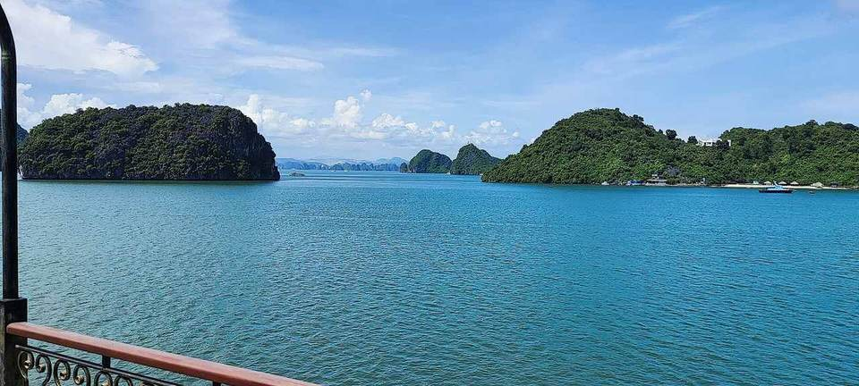
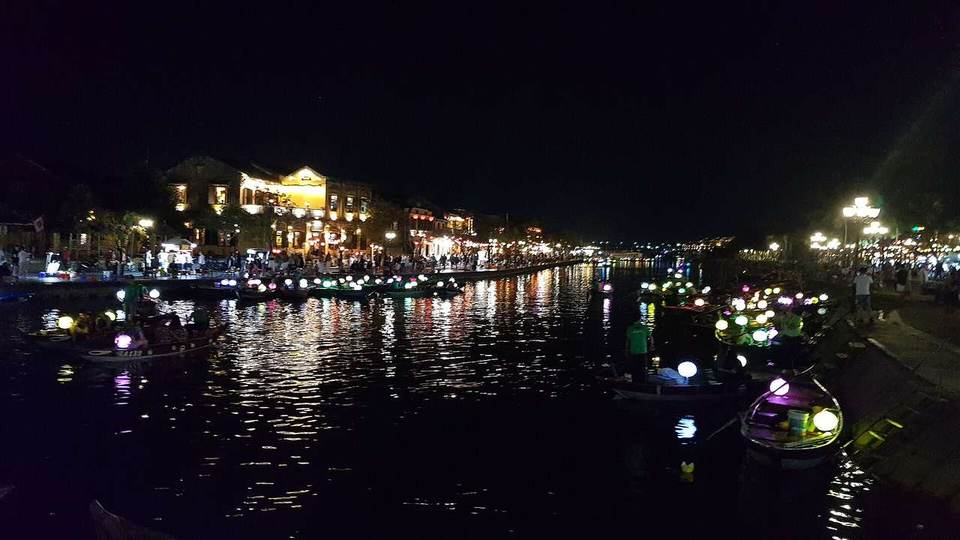
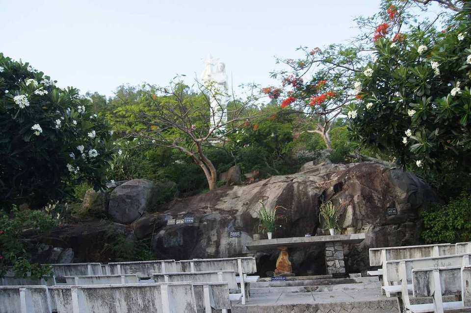

Chương trình hành hương
Hành Hương Việt Nam 2028
Tạ Ơn Hồng Ân Linh Mục — nhân kỷ niệm thụ phong linh mục của Cha Paul (11/1)

Đếm ngược tới ngày khởi hành
… ngày
Ngày 1 · Thứ Bảy 8/1/2028
Khởi hành từ Vancouver
- Đoàn tập họp tại sân bay Vancouver (YVR), bay chuyến tối, quá cảnh Đài Bắc.
- Nghỉ đêm trên máy bay — mang theo tâm tình của người lên đường hành hương.
- Nhớ mang áo ấm: miền Bắc tháng 1 se lạnh.
Ngày 2 · Chúa nhật 9/1/2028
Đặt chân đến Hà Nội
- Nối chuyến đi Hà Nội, đến nơi vào buổi tối.
- Xe đón đoàn về khách sạn, nhận phòng nghỉ ngơi.
- Một giấc ngủ ngon để lấy lại sức sau chặng bay dài — hành trình thiêng liêng bắt đầu từ ngày mai.

Ngày 3 · Thứ Hai 10/1/2028
Hà Nội – ngày chào quê hương
- Buổi sáng nghỉ ngơi tự do, dạo quanh khu phố cổ.
- Buổi chiều viếng Nhà thờ Lớn Hà Nội — cầu nguyện cho chuyến đi được bình an.
- Tham quan Hồ Gươm, dạo 36 phố phường bằng xe điện.
- Cơm tối chào mừng đoàn — lần đầu quây quần bên nhau trên đất mẹ.

✦ Ngày hồng ân · Ngày 4 · Thứ Ba 11/1/2028
Lễ kỷ niệm thụ phong của Cha Paul
- Đoàn đi Ninh Bình, cùng Cha Paul dâng Thánh lễ tạ ơn kỷ niệm ngày thụ phong linh mục tại Nhà thờ chính tòa Phát Diệm — ngôi thánh đường đá với kiến trúc thuần Việt độc đáo.
- Tạ ơn Chúa vì hồng ân linh mục, và cầu nguyện cho ơn gọi của Giáo Hội.
- Buổi chiều tham quan Tràng An (di sản UNESCO) hoặc Tam Cốc theo sức của đoàn.
- Nghỉ đêm tại Ninh Bình.

Ngày 5 · Thứ Tư 12/1/2028
Ninh Bình – ngày thinh lặng
- Ngày nghỉ nhẹ dành cho người lớn tuổi: viếng Đan viện Châu Sơn (Nho Quan), thinh lặng cầu nguyện.
- Không di chuyển xa — để thân xác nghỉ ngơi, tâm hồn lắng đọng.
- Buổi tối sinh hoạt nhóm, chia sẻ cảm nghiệm những ngày đầu.

Ngày 6 · Thứ Năm 13/1/2028
Bay vào Huế – về với Mẹ La Vang
- Bay từ Hà Nội vào Huế.
- Buổi chiều đoàn đến La Vang (Quảng Trị) — Trung tâm Thánh Mẫu toàn quốc, nơi Mẹ đã hiện ra an ủi con cái Việt Nam.
- Cầu nguyện buổi chiều tại Linh đài Đức Mẹ La Vang.
- Nghỉ đêm tại Huế.
✦ Ngày trọng tâm · Ngày 7 · Thứ Sáu 14/1/2028
La Vang – ngày hành hương trọng tâm
- Trọn một ngày bên Mẹ: dâng Thánh lễ tại La Vang.
- Đi chặng đàng Thánh Giá, giờ chầu Thánh Thể, lần hạt Mân Côi chung với nhau.
- Đây là điểm thiêng liêng nhất của chuyến đi — mỗi người dâng lên Mẹ một ý nguyện của gia đình mình.
- Buổi tối trở về Huế nghỉ ngơi.

Ngày 8 · Thứ Bảy 15/1/2028
Huế – Đà Nẵng
- Buổi sáng tham quan Đại Nội Huế và chùa Thiên Mụ — tìm hiểu văn hóa, lịch sử đất nước.
- Buổi chiều vượt đèo Hải Vân đi Đà Nẵng, ngắm một trong những cung đường biển đẹp nhất Việt Nam.
- Tắm biển Mỹ Khê (tùy thích) hoặc nghỉ ngơi tại khách sạn.

Ngày 9 · Chúa nhật 16/1/2028
Chúa nhật tại Đà Nẵng – Hội An
- Dâng lễ Chúa nhật tại Đà Nẵng cùng cộng đoàn địa phương.
- Tham quan Bà Nà Hills: Làng Pháp, Cầu Vàng nổi tiếng (tùy sức — ai mệt có thể nghỉ tại khách sạn).
- Buổi chiều tối đến phố cổ Hội An: đèn lồng rực rỡ, đi thuyền trên sông Hoài, thả hoa đăng cầu nguyện.

Ngày 10 · Thứ Hai 17/1/2028
Vũng Tàu – dưới chân Chúa Kitô Vua
- Bay từ Đà Nẵng vào Sài Gòn, xe đưa đoàn đi Vũng Tàu.
- Viếng tượng Chúa Kitô Vua cao 32m trên núi Nhỏ — dang tay ôm lấy biển cả.
- Dâng Thánh lễ tại Đền thánh Đức Mẹ Bãi Dâu.
- Nghỉ đêm tại Vũng Tàu, nghe sóng biển vỗ về.

Ngày 11 · Thứ Ba 18/1/2028
Vũng Tàu – Sài Gòn
- Buổi sáng chào tạm biệt Đức Mẹ Bãi Dâu, xe về Sài Gòn.
- Viếng Đền Đức Mẹ Fatima Bình Triệu — dâng lễ, mua quà lưu niệm thánh mang về cho người thân.
- Tham quan Nhà thờ Đức Bà và Bưu điện Trung tâm Sài Gòn.

Ngày 12 · Thứ Tư 19/1/2028
Sài Gòn – ngày chia tay
- Dâng Thánh lễ tại Nhà thờ St. Francis Xavier Chợ Lớn — trùng tên với giáo xứ của Cha Paul tại Vancouver!
- Buổi chiều tự do mua sắm quà cho gia đình.
- Buổi tối: du thuyền trên sông Sài Gòn, cơm chia tay đoàn trong tâm tình tạ ơn.
Ngày 13 · Thứ Năm 20/1/2028
Rời Việt Nam
- Buổi sáng thong thả tại Sài Gòn, mua sắm nốt những món quà còn thiếu.
- Buổi chiều ra sân bay Tân Sơn Nhất, bay về Đài Bắc (chuyến tối).
- Mang theo đầy ắp kỷ niệm và ơn lành sau 12 ngày trên quê hương.
Ngày 14 · Thứ Sáu 21/1/2028
Về đến Vancouver
- Nối chuyến từ Đài Bắc về Vancouver, về đến nhà vào buổi tối cùng ngày.
- Kết thúc chuyến hành hương — nhưng mang ơn gọi làm chứng nhân Tin Mừng về với đời sống hằng ngày.
Chi phí ước tính
Mỗi người (phòng đôi, chưa phải giá chính thức): • Vé máy bay Vancouver ⇄ Việt Nam (quá cảnh Đài Bắc): ~C$1,800 • Vé bay nội địa (Hà Nội → Huế, Đà Nẵng → Sài Gòn): ~C$250 • Land tour 12 ngày (xe, khách sạn, ăn uống, vé tham quan, hướng dẫn viên tiếng Việt): ~C$1,500–2,000 • Tổng cộng: khoảng C$3,500–4,000/người Chưa gồm: tiền tip hướng dẫn/tài xế, phụ thu phòng đơn, visa, bảo hiểm du lịch, chi tiêu cá nhân.
Lưu ý
- Tháng 1: miền Bắc se lạnh (khoảng 15–18°C, có thể mưa phùn) — nhớ mang áo ấm; miền Trung và miền Nam khô ráo, dễ chịu.
- Nhịp đi đã chừa 2 ngày nhẹ để người lớn tuổi nghỉ ngơi.
- Tết Nguyên Đán 2028 là ngày 26/1 — đoàn về trước Tết 5 ngày, vừa kịp cảm nhận không khí Tết đang về, vừa tránh giá cao điểm.
- Đây là bản phác thảo: giờ bay, khách sạn và giá cả chính thức sẽ được cập nhật sau.
- Đoàn giới hạn 35 người — xin đăng ký sớm với Cha Paul.